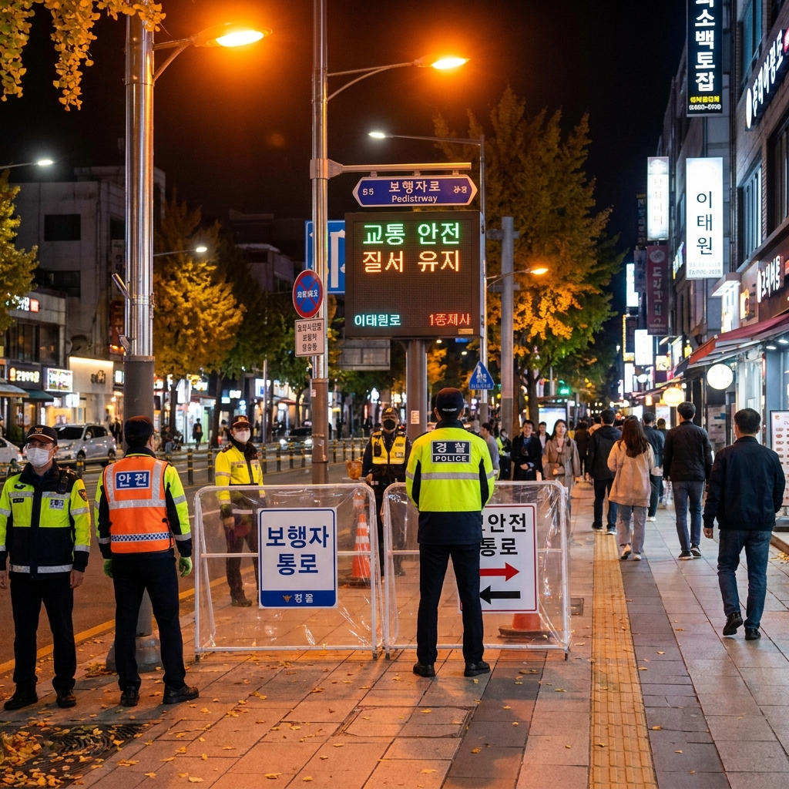
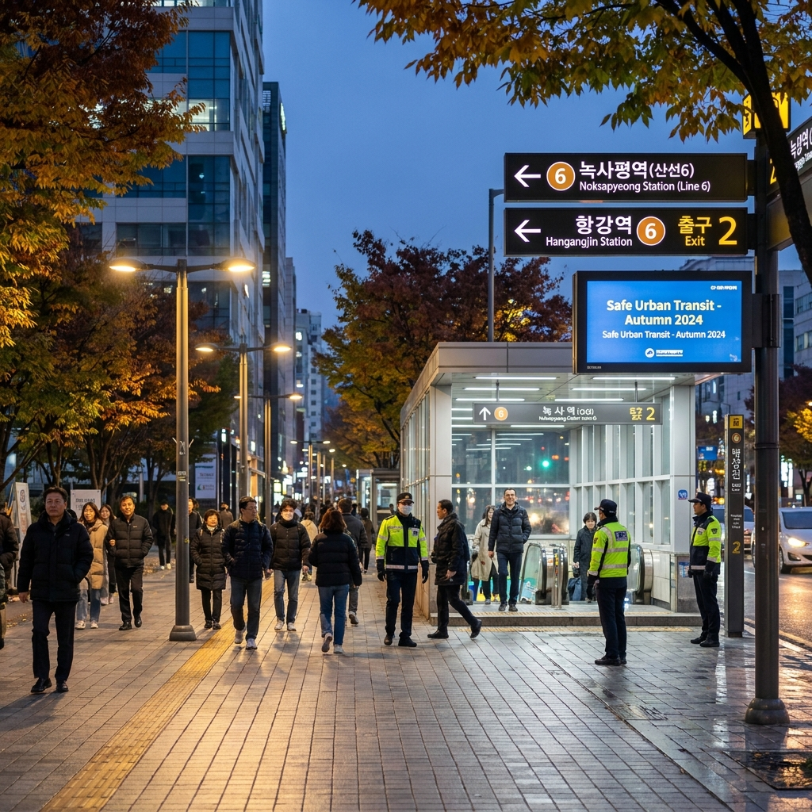

2026 핼러윈 이태원 교통통제 구역과 지하철 무정차 대처 — 6호선 이태원역 통제 시간과 녹사평·한강진역 귀가 동선 체크리스트
2026년 핼러윈 주간(10월 하순~11월 초순)을 맞아 서울시와 용산구, 서울경찰청은 10월 31일(토) 전후 이태원 관광특구 일대에 특별 안전관리 대책과 단계별 교통통제를 시행합니다.
보행자 안전 확보를 위해 이태원로 메인 도로의 일반 차량 진입이 전면 또는 부분 통제되며, 인파 밀집도가 임계치를 초과할 경우 지하철 6호선 이태원역은 열차가 정차하지 않고 무정차 통과하게 됩니다.
이태원역 무정차 통과 시 지하철 승하차가 전면 차단되므로, 인접한 녹사평역이나 한강진역으로 도보 우회하는 귀가 동선을 사전에 숙지해 두셔야 혼잡에 갇히지 않고 안전하게 이동할 수 있습니다.
차량 통제 구역, 버스 우회 노선, 실시간 인파 모니터링 체계, 그리고 비상시 안전 귀가 체크리스트를 공공기관 공식 안전 대책을 바탕으로 상세히 정리해 드립니다.

보행자 안전을 위해 이태원로 일대에 설치된 안전 펜스와 현장 교통통제 안내 요원들 / AI 제작 이미지
01 | 2026 핼러윈 특별 안전관리 대책 시행 배경과 중점 구역
서울시와 자치구, 소방·경찰 당국은 매년 10월 마지막 주 주말에 대규모 인파가 집중되는 주요 번화가를 대상으로 '핼러윈 인파 안전관리 특별 대책'을 가동하고 있습니다.
주요 중점 관리 지역은 용산구 이태원 관광특구(세계음식문화거리, 이태원역 일대)를 비롯하여 홍대 관광특구, 강남역, 명동, 성수동 카페거리 등 10여 개 구역입니다.
행정안전부와 지자체는 합동상황실을 구축하고 24시간 실시간 인파 모니터링 시스템을 운영하여 단위 면적당 인원수가 안전 기준을 초과하지 않도록 선제적으로 관리합니다.
특히 이태원 일대는 좁은 경사로 골목이 많은 지형적 특성상 인파 분산과 일방통행 보행 유도, 차도 통제를 통한 보행로 확보가 최우선 조치로 이루어집니다.
시민들의 안전을 지키고 사고를 사전에 차단하기 위한 공공 통제 조치이므로 현장 안내 요원의 지시를 철저히 준수하는 것이 무엇보다 중요합니다.
02 | 이태원로 차량 통제 구간과 우회 도로 안내
핼러윈 인파가 집중되는 주말 야간(금요일~일요일 17:00부터 익일 03:00까지)에는 이태원로 주요 구간의 일반 차량 통행이 단계별로 통제됩니다.
1. 차량 통제 중심 구간: 이태원 삼거리(녹사평역 방면)부터 제일기획 앞 삼거리(한강진역 방면)까지의 이태원로 왕복 차로가 통제 대상입니다.
2. 단계별 통제 기준: 보행자 밀집도가 높아져 차도로 인파가 유입될 위험이 감지되면 1단계로 하위 1~2개 차로를 보행로로 전환하고, 혼잡도가 극에 달하면 버스를 제외한 모든 일반 승용차의 진입이 전면 차단됩니다.
3. 우회 통행 도로: 이태원로를 경유하여 동서로 이동해야 하는 차량은 소월로(남산 방면) 또는 서빙고로·강변북로로 사전에 우회하셔야 합니다.
4. 불법 주정차 즉시 견인: 비상 소방 통로 및 구급차 이동로 확보를 위해 이태원로 및 이태원 앤틱가구거리 주변의 불법 주정차 차량은 경고 없이 즉시 강제 견인 조치됩니다.
03 | 지하철 6호선 이태원역 무정차 통과 기준과 대처 요령
서울교통공사는 역내 승강장 및 출입구 혼잡도가 위험 수준에 도달할 경우 지하철 6호선 이태원역의 열차 무정차 통과를 전격 시행합니다.
무정차 통과는 서울교통공사 현장 상황실과 경찰의 합동 판단에 따라 결정되며, 통과 결정 즉시 재난안전문자와 역사 안내 방송을 통해 전파됩니다.
열차가 이태원역에 서지 않고 지나치게 되면 승차와 하차가 모두 불가능해지므로 역내로 진입하려 대기하는 것은 위험하며 통행을 방해하게 됩니다.
무정차 통과가 발표되면 역사 출입구가 완전히 차단되며, 이미 역 주변에 계신 분들은 즉시 지상 유도 요원의 안내에 따라 인근 대체 지하철역으로 이동하셔야 합니다.
실시간 무정차 여부는 서울시 '또타지하철' 앱 및 서울교통공사 공식 홈페이지, 스마트폰 재난문자를 통해 실시간으로 확인하실 수 있습니다.

이태원역 혼잡 시 안전한 우회 승차가 가능한 인근 녹사평역 방면의 넓은 보행 동선 / AI 제작 이미지
04 | 인근 우회 지하철역(녹사평역 vs 한강진역) 이동 비교표
이태원역이 무정차 통과되거나 극심한 인파로 역 진입이 어려울 때, 양옆의 인접 역으로 도보 이동하여 안전하게 지하철을 탑승하는 경로를 비교해 드립니다.
| 구분 |
지하철 6호선 녹사평역 (용산구청 방면) |
지하철 6호선 한강진역 (블루스퀘어 방면) |
| 이태원역 기준 위치 |
이태원역 서측 방면 (삼거리 방향) |
이태원역 동측 방면 (제일기획 방향) |
| 도보 이동 거리 및 시간 |
약 600m / 도보 8분~10분 소요 |
약 900m / 도보 12분~15분 소요 |
| 보행로 환경 |
용산구청 방면 완만한 내리막, 도로 폭이 매우 넓음 |
대사관길 인근 넓은 보도, 한남동 방면 평탄 도로 |
| 역사 구조적 특징 |
지하 공간이 매우 넓고 웅장하여 인파 대기 수용력 우수 |
블루스퀘어 및 옥외 광장과 연결되어 개방감 우수 |
| 연계 대중교통 |
용산역·서울역·마포 방면 시내버스 환승 용이 |
강남·한남대교·옥수 방면 버스 환승 용이 |
| 추천 귀가 방향 |
마포, 공덕, 신촌, 일산, 영등포 방면 귀가자 |
신당, 동대문, 강남, 성동, 광진 방면 귀가자 |
이태원역 중심부에서 서쪽(삼거리 방면)에 계시다면 녹사평역으로, 동쪽(제일기획·해밀톤호텔 동편)에 계시다면 한강진역 방면으로 큰길을 따라 이동하시는 것이 가장 빠르고 안전합니다.
05 | 시내버스 우회 운행 및 심야 올빼미 버스 탑승 위치
이태원로 차량 통제가 시작되면 평소 이태원역을 경유하던 시내버스 노선(110A·B, 400번, 405번, 421번 등)이 임시 우회 운행합니다.
이 경우 '이태원역·해밀톤호텔' 정류소는 무정차 통과 처리되며, 버스는 반포로, 녹사평대로, 또는 한남로를 경유하여 우회합니다.
따라서 버스를 이용해 귀가하려는 분들은 이태원 메인 도로가 아닌 '녹사평역(용산구청)' 정류소나 '순천향대학병원·한남오거리' 정류소로 이동하여 탑승하셔야 합니다.
심야 시간대(23:30 이후) 대중교통이 끊긴 후에는 서울시 심야 올빼미 버스(N13, N40 등)가 운행되지만, 이 역시 메인 이태원로는 진입하지 않으므로 한남대교 북단이나 녹사평역 정류소 위치를 지도 앱으로 미리 확인해 두어야 합니다.
06 | 지능형 인파감지 CCTV와 일방통행 보행 안전 펜스
서울시와 경찰청은 골목길 인파 쏠림 사고를 원천 방지하기 위해 첨단 인파 관리 시스템을 전면 가동합니다.
골목길 상공에 설치된 지능형 인파감지 CCTV는 1㎡당 밀집 인원을 인공지능으로 실시간 분석하여, 1㎡당 4~5명을 초과할 경우 즉각 합동상황실로 경보를 울립니다.
위험 경보가 발생하면 현장 경찰관과 기동대가 즉시 투입되어 골목 진입을 통제하고 인파를 넓은 대로변으로 유도합니다.
세계음식문화거리와 주요 좁은 골목길에는 이동식 보행 안전 펜스가 설치되어 강제적인 일방통행이 시행됩니다.
보행 유도 화살표와 바닥 유도선이 지정되어 있으므로, 역주행이나 통로 내 정체는 엄격히 금지되며 안전요원의 안내 방향을 따라 계속 이동하셔야 합니다.
07 | 비상시 현장 응급의료소 및 안전 쉼터 위치
이태원 일대에는 만일의 환자 발생과 긴급 처치를 위해 다수의 임시 현장 응급의료소가 설치됩니다.
주요 응급 거점은 용산종합상황실 인근, 이태원파출소 인근, 한남동 주민센터 방면 등에 마련되며 소방 구급차와 의료 인력이 상시 대기합니다.
인파 밀집으로 인한 호흡 곤란이나 가벼운 찰과상, 어지럼증을 느낄 경우 즉시 주변 안전 조끼를 착용한 요원에게 도움을 요청하거나 가장 가까운 응급 부스로 이동해야 합니다.
또한 주요 대사관 주변과 관공서는 긴급 대피로로 지정되어 비상 통로가 열려 있으므로 대로변 안내 팻말을 눈여겨보시기 바랍니다.
08 | 핼러윈 주간 이태원 이동 전 필수 안전 체크리스트
안전하고 원활한 이동을 위해 당일 현장 방문 전 반드시 점검해야 할 핵심 수칙입니다.
🚨 이태원 방문객을 위한 안전 귀가 실전 체크리스트
1. 실시간 정보 확인 앱 설치: 서울시 '또타지하철' 앱 및 서울교통 포털을 스마트폰에 미리 다운로드하여 무정차 여부 수시 확인
2. 배터리 잔량 확보: 긴급 재난문자 수신과 길찾기, 연락 유지를 위해 휴대용 보조배터리를 반드시 완충하여 지참
3. 편안한 운동화 착용: 이태원 지형은 가파른 경사로가 많고 지하철 무정차 시 1km 이상 도보 이동이 필수적이므로 굽 높은 신발 절대 금지
4. 골목길 멈춤 금지: 좁은 경사로에서 사진 촬영을 위해 멈춰 서거나 역주행하지 말고, 이동 흐름을 따라 자연스럽게 대로변으로 이동
5. 귀가 동선 사전 설정: 자정 이후 택시 승차는 전면 불가능에 가까우므로, 밤 10시 이전 지하철 이용 또는 녹사평역 방면 심야버스 동선 확보
09 | 안전 귀가를 위한 시간대별 권장 행동 요령
불필요한 혼잡을 피하고 안전하게 일상으로 복귀하기 위한 시간대별 최적의 권장 가이드입니다.
인파 밀집이 가장 심화되는 시간대는 토요일 밤 21:00부터 01:00 사이입니다.
이 시간대에는 골목길 내부 통행이 극도로 제한될 수 있으므로, 용무가 있으시더라도 가급적 오후 20시 30분 이전에 지하철 6호선 또는 버스를 이용해 귀가길에 오르시는 것이 가장 현명합니다.
만약 심야 시간에 현장에 머무르게 되셨다면, 인파가 몰려 있는 이태원역 중심부로 진입하지 마시고 큰 도로를 따라 서쪽의 녹사평역 방면이나 동쪽의 한강진역 방면으로 신속히 우회하여 이탈하시기 바랍니다.
공공 안전 통제 수칙과 현장 요원의 지시에 성숙한 시민의식으로 협조해 주시기를 당부드립니다.
#이태원교통통제
#이태원역무정차
#핼러윈안전관리
#녹사평역우회
#한강진역도보
#서울시안전대책
#이태원귀가동선
#심야버스우회
#골목길일방통행
#인파안전수칙